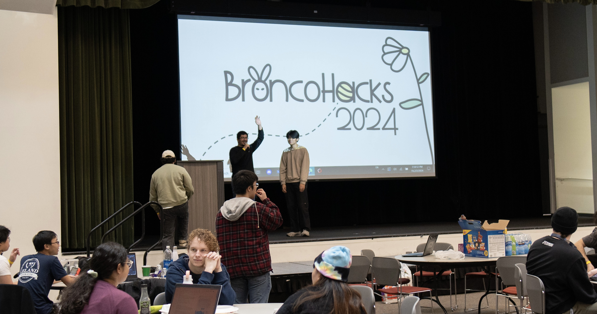
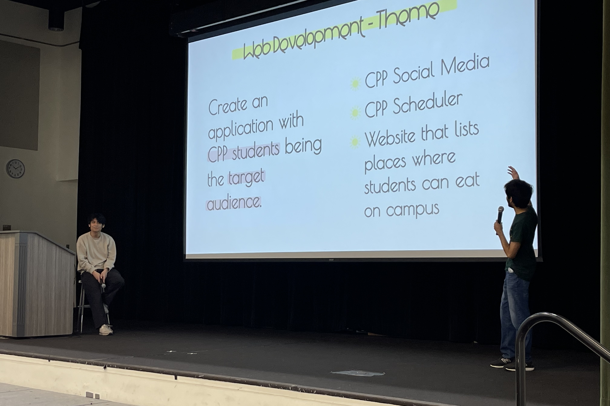
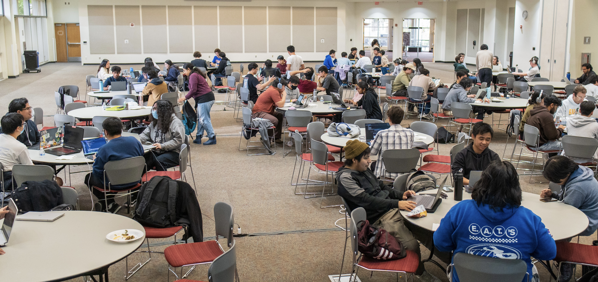
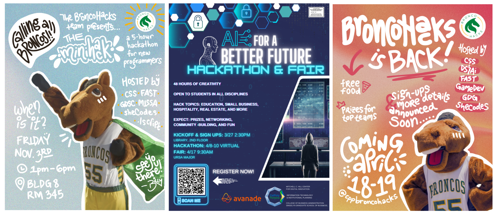

BroncoHacks Hackathon Planning
Skills: Timeline planning, budgeting and sponsorship, communication, marketing
Event Page: BroncoHacks

Overview
In 2022, the board of the ACM chapter, Computer Science Society, set out to revive hackathons on campus, which had been absent since HackPoly 2018. By uniting multiple student tech clubs, securing sponsorships, and planning event logistics from the ground up, we launched BroncoHacks, a 24-hour hackathon open to all CPP students.
Research
As one of the few members with prior hackathon experience, I provided insight into event flow, participant needs, and judging criteria. I researched best practices from other collegiate hackathons, including team formation strategies, project categories, scheduling, and judging criteria.
Goals
- Re-establish CPP as a hub for collaborative, innovative tech events.
- Provide a supportive environment for students of all skill levels to explore new technologies.
- Build long-term relationships with industry sponsors for future events.
Obstacles
- No existing documentation from past hackathons.
- Compressed planning timeline to secure sponsors, venues, and volunteers with all organizers being fulltime students.
- Uncertainty around participant turnout after years without a hackathon.
- School campus having limits for events that stretch to later hours.

Solution
- Developed an event roadmap covering recruitment, sponsorship, marketing, and logistics.
- Leveraged personal and club networks to reach out to companies for funding and workshop hosting.
- Created a participant onboarding guide and live support channels to ensure smooth communication.
Results
- Successfully hosted the first CPP hackathon in 4 years with over 200 participants.
- Facilitated 29 project teams within the 24-hour period.

Reflection
After only experiencing hackathons from the perspective of a participant, organizing BroncoHacks allowed me to see the months of planning behind these 24 hour events. The experience reinforced the value of clear communication, contingency planning, and collaboration between organizations. Seeing students network, learn, and build together made the effort worthwhile and set the stage for BroncoHacks to become an annual tradition.
